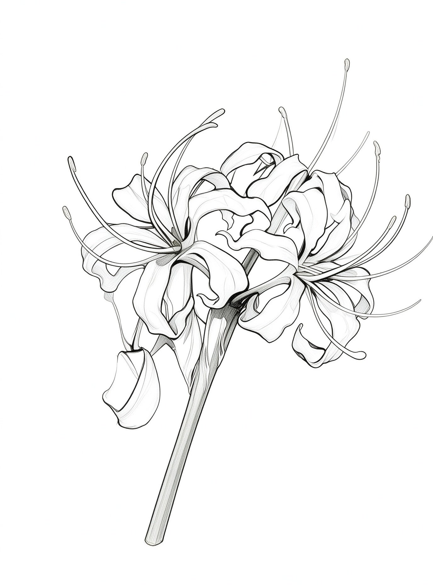

于数字彼岸，
记录未见的风景。
文字 / 视觉 / 艺术
这里存放一些慢下来的东西：关于设计、写作与日常的观察。 不追热点，不求结论，只把想清楚的部分写下来。
作品集
最新文章
朋友章
关于
未见花是一个人的长期记录。所有文章以 Markdown 源文件存放， 页面由原生 HTML、CSS 与 JavaScript 驱动，没有框架，也没有构建步骤。

文字 / 视觉 / 艺术
这里存放一些慢下来的东西：关于设计、写作与日常的观察。 不追热点，不求结论，只把想清楚的部分写下来。
未见花是一个人的长期记录。所有文章以 Markdown 源文件存放， 页面由原生 HTML、CSS 与 JavaScript 驱动，没有框架，也没有构建步骤。